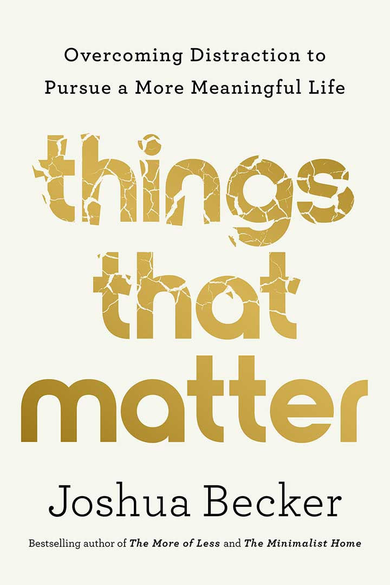
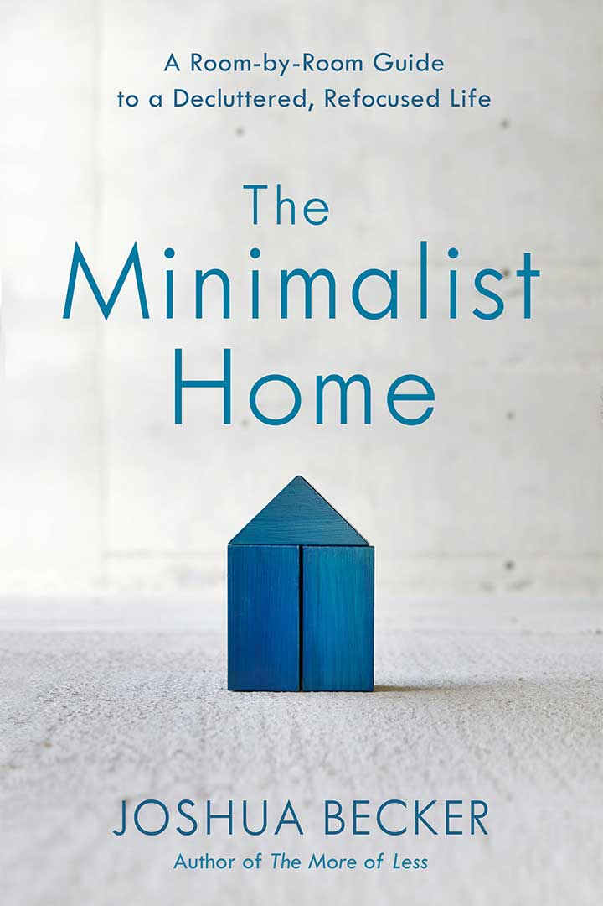

About
My story begins in suburban Vermont while I was cleaning the garage, my wife was cleaning the bathrooms and my 5–year old son was playing alone in the backyard. I struck up a regular conversation with my neighbor who commented, “Maybe you don't need to own all this stuff.”
The juxtaposition was striking. My possessions piled up in the driveway… my son in the backyard… my day slipping away… I immediately recognized something needed to change. My belongings were not adding value to my life. Instead, they were subtracting from it.
My family and I began donating, recycling, and removing our unnecessary personal possessions. We embarked on an intentional journey to own less stuff.
As a result, we discovered more money, more time, more energy, more freedom, less stress, and more opportunity to pursue our greatest passions: faith, family, friends. And we decided to write about it.
Becoming Minimalist quickly became a place to encourage others to embrace minimalism. It does not boldly require anyone to become minimalist overnight — nor does it specifically define the word for you. Instead, it encourages each reader to discover their own journey and the far–reaching benefits that come from owning less.
Books
-

Things That Matter
Do you want to live a meaningful life — with very few regrets — and make a positive difference in the world? But is culture distracting you from doing so? Perhaps moments, days, and years go by without you stopping to ask yourself, Am I living out my true purpose? Even if that question whispers to you, are you brushing it aside because you don't know what to change in life's busyness?
Things That Matter is a book about living well. It's about overcoming the chatter of a world focused on all the wrong things. It's about rethinking the common assumptions of today to find satisfaction and fulfillment tomorrow.
-

The Minimalist Home
The Minimalist Home takes us on a decluttering tour of every room in our houses and apartments, showing how to decide what to get rid of and what to keep. Joshua offers practical guidelines for simplifying our lifestyle at home and addresses underlying issues that contribute to over–accumulation in the first place.
The purpose is not just to create a more inviting living space. It's also to turn our life's HQ — our home — into a launching pad for a more fulfilling and productive life in the world.
-
The More of Less
We own too much stuff. We feel the weight and burden of our clutter every day. It redirects our greatest passions to things that can never fulfill. And it distracts us from the very life we wish we were living.
In The More of Less, Joshua helps you recognize the life–giving benefits of owning less and craft a personal, practical approach to decluttering your home and life.
With action plans, lists, and appeals to the reader's quiet nature, Becker successfully presents a well–rounded argument that a journey toward minimalism is possible and even enjoyable.
– Publisher's Weekly